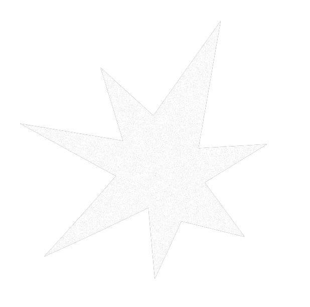

Loading Music
0 / 15
Pre-Electronic Experiments
1932
—
Rachmaninoff Prelude
—
Nikolai Voinov
Musique Concrète & Early Electronics
1948
—
Cinq Études de Bruits
—
Pierre Schaeffer
1952
—
Williams Mix
—
John Cage
1956
—
Gesang der Jünglinge
—
Karlheinz Stockhausen
1960
—
Four Aspects
—
Daphne Oram
1963
—
Doctor Who Theme
—
Delia Derbyshire
1965
—
It's Gonna Rain
—
Steve Reich
1967
—
Piano Phase
—
Steve Reich
Electronic Pioneers / Ambient
1978
—
Music for Airports 1/1
—
Brian Eno
Chicago House & Detroit Techno
1987
—
Strings of Life
—
Derrick May
IDM / Electronica
1995
—
Tri Repetae
—
Autechre
1998
—
Roygbiv
—
Boards of Canada
Glitch / Contemporary Experimental
2005
—
Data Matrix
—
Ryoji Ikeda
2010
—
Returnal
—
Oneohtrix Point Never